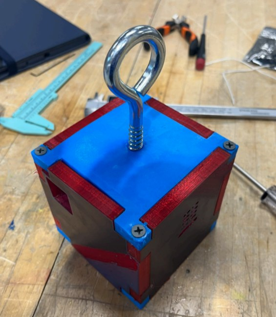
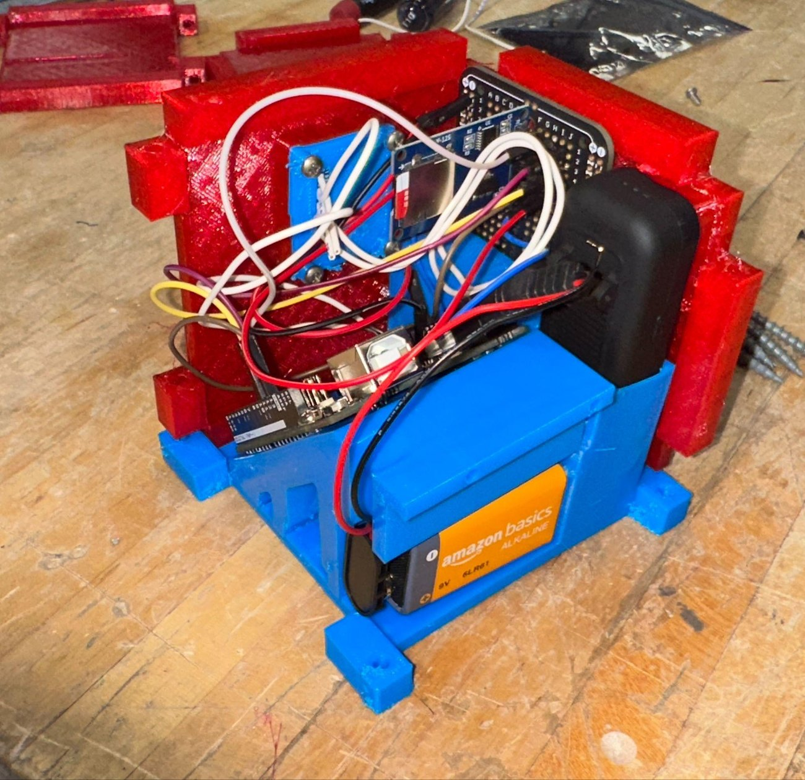
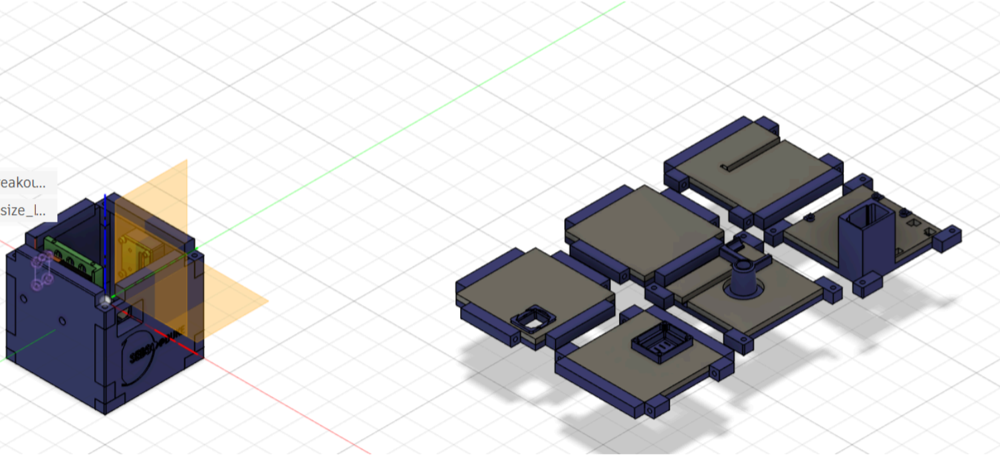

CubeSat
I owned the chassis and internal layout for a 1U CubeSat prototype that records atmospheric data on a weather-balloon flight. I designed the printed structure, wired and tested all electronics, wrote the Arduino firmware, and ran FEA confirming the structure survives a 9 g launch load at a 2× safety factor. I analyzed to the CubeSat launch spec rather than the balloon's actual loads, so the chassis carries over to a future orbital launch unchanged.
Motivation
A flight-representative 1U prototype for the Duke Society for Exploration of Deep Space. It has to package sensing, logging, power, and recovery hardware into a printed chassis that survives launch and reads clean outside air at altitude.
My role
I designed all nine printed parts and the internal layout, wired and bench-tested the electronics, wrote the firmware, and ran the launch-load FEA.
Technical approach
Chassis. Nine 3D-printed parts, six jigsaw-style exterior panels and three internal mounts, clamp top-to-bottom under eight wood screws through channels. Each panel carries a laser-cut foam insert sized to its components for altitude insulation.
Layout decisions. I angled the Arduino on a 45° platform so the over-long battery cable tucks into the bay. I sealed the BMP390 in a ventilated front cavity so it reads outside air while the electronics bay stays isolated. The camera and the GPS/AirTag tracker each sit in a form-fitted cage for imaging and post-flight recovery.
Electronics. An Arduino Uno reads a BMP390 barometric and temperature sensor over I²C and logs to an SD-card module over SPI through the flight.
What I would do differently. I angled the Arduino on a 45° platform to swallow an over-long battery cable instead of specifying a shorter one, spending bay volume on a problem I could have deleted. I would drop the wood screws: they carry the 9 g load path into printed panels, and they are the joint I expect to loosen under a vibration the balloon flight never applies.


